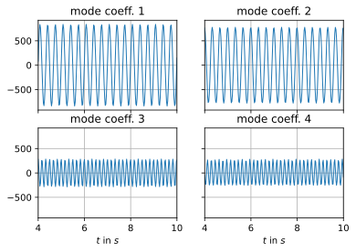

flowTorch - analysis and ROM of high speed stall flow phenomena
Andre Weiner, Richard Semaan
TU Braunschweig, Institut für Strömungsmechanik
slides: https://andreweiner.github.io/reveal.js/DLRK_2021.html
simple and unified access to data
balance between flexibility and usability
full transparency - no need to reinvent the wheel
Today's program
- flowTorch overview
- Analysis 1 - flow past a cylinder
- Analysis 2 - NACA 0012 transonic buffet
- What's next?
flowTorch overview
- development since July 2020
- Python, open-source (GPL-v3)
- uses PyTorch for data structures,
linear algebra, machine learning, ... - interface to common data formats
TAU, OpenFOAM, VTK, CSV, iPSP,...
flowTorch packages
other content of the development repository
- simulation setups
- documentation
- tutorials
Jupyter labs

Analysis 1 - flow past a circular cylinder
2D OpenFOAM simulation; $Re=\bar{U}_{in}d/\nu = 100$; cylinder placed $0.1d$ off-center.
The goal
get a feeling for the flowTorch workflow
0. Importing modules
import torch as pt
from flowtorch import DATASETS
from flowtorch.data import FOAMDataloader, mask_box
from flowtorch.analysis import SVD
1. Create access, inspect available data
path = DATASETS["of_cylinder2D_binary"]
loader = FOAMDataloader(path)
times = loader.write_times
fields = loader.field_names
Number of available snapshots: 401
First five write times: ['0', '0.025', '0.05', '0.075', '0.1']
Fields available at t=10: ['p', 'vorticity', 'phi', 'U']
2. Create a mask
# load vertices and discard z-coordinate
vertices = loader.vertices[:, :2]
mask = mask_box(vertices, lower=[0.1, -1], upper=[0.75, 1])
Selected vertices: 7190/13678
3. Load the data and apply the mask
# select time window
window_times = [time for time in times if float(time) >= 4.0]
# allocate data matrix
data_matrix = pt.zeros((mask.sum().item(), len(window_times)))
# fill the data matrix
for i, time in enumerate(window_times):
# load the vorticity vector field, take the z-component [:, 2]
vorticity = loader.load_snapshot("vorticity", time)[:, 2]
# apply mask
data_matrix[:, i] = pt.masked_select(vorticity, mask)
# subtract the temporal mean from each snapshot
data_matrix -= pt.mean(data_matrix, dim=1).unsqueeze(-1)
4. Perform analysis - singular value decomposition (SVD/POD)
svd = SVD(data_matrix, rank=400)
print(svd)
SVD of a 7190x241 data matrix
Selected/optimal rank: 241/97
data type: torch.float32 (4b)
truncated SVD size: 6.8326Mb
5.1 Visualization - singular values
5.2 Visualization - POD modes (left singular vectors)
5.3 Visualization - POD mode coefficients
Analysis 2 - NACA 0012 transonic shock buffet
Transonic buffet on a NACA 0012 airfoil at Reynolds number $Re=10^7$, Mach number $Ma=0.75$, and angle of attack $\alpha=4^\circ$.
free buffet test data and setup
- experimental data by McDevitt & Okuno
- Naca 0012 airfoil, $Ma=0.75$, $Re=10^7$, $\alpha = 4^\circ$
- OpenFOAM, rhoPimpleFoam, 3D, SA-IDDES
- $f_{sim} = 28Hz$ (based on $c_L$),
$f_{exp} = 31Hz$ (based on $c_p$) - github.com/AndreWeiner/naca0012_shock_buffet
The goal
identify coherent structures associated with the buffet frequency
The tool
Dynamic Mode Decomposition (DMD)
typical goals of a DMD analysis include:
- spectral analysis
- stability analysis
- reduced-order modeling
...
4. Perform analysis - dynamic mode decomposition
from flowtorch.analysis import DMD
# snip
dt = times_num[1] - times_num[0]
dmd = DMD(data_matrix, dt, rank=200)
print(dmd)
SVD of a 13950x149 data matrix
Selected/optimal rank: 149/51
...
LSQ:
Overall DMD size: 24.0429Mb
5.1 Visualization - DMD spectrum
5.2 Visualization - DMD modes
What's next?
D. Fernex, B. R. Noack, R. Semaan:
Cluster-based network modeling - from snapshots to complex dynamical systems
D. Fernex, A.Weiner, B. R. Noack, R. Semaan:
Sparse Spatial Sampling: a mesh sampling algorithm for efficient processing of big simulation data
Thank you for your attention!
Interested? github.com/AndreWeiner/flowtorch
{a.weiner|r.semaan}@tu-braunschweig.de